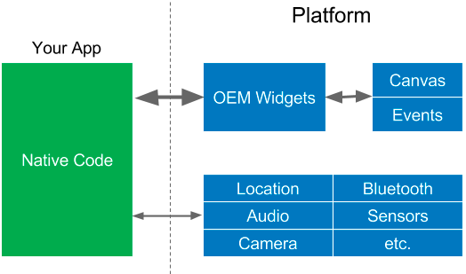
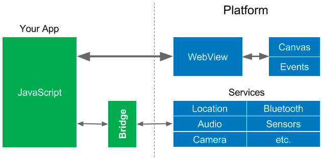
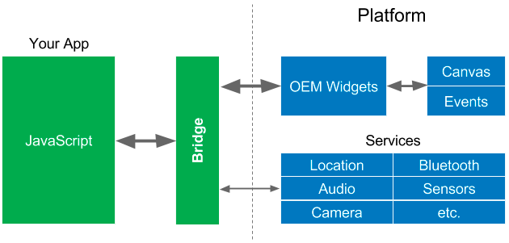
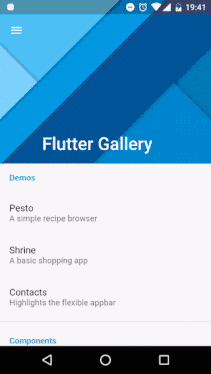
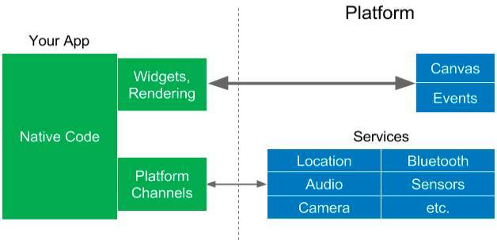
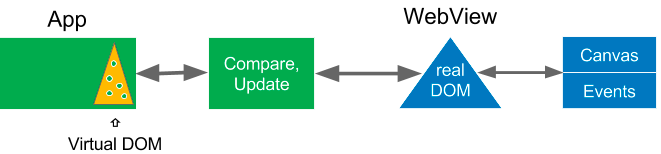
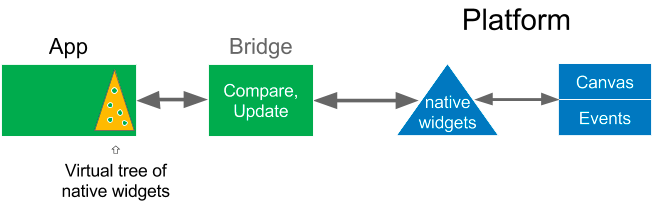
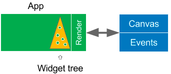

Flutter概要
是 Google推出并开源的移动应用开发框架，主打跨平台、高保真、高性能。开发语言为Dart，使用 Native引擎渲染视图。开发者可以为 Flutter添加 native扩展。
移动开发的简史
苹果的 iOS SDKs 发布于 2008 年，谷歌的 Android 软件开发工具包发布于 2009 年，这两种工具包分别基于Objective-C 和 Java编程语言。
OEM SDKs

通过这些 SDK，应用可以与系统通信，以创建 UI 组件或访问系统相机。这些组件被渲染到手机屏幕，而相应的事件则被传回给组件。这个架构足够简单，但你仍然不得不为每个平台开发单独的 App。
WebView（Hybrid开发）
第一个跨平台的框架基于 Java 和 WebView，例如 Titanium 和 一系列相关的框架：PhoneGap, Apache Cordova, Ionic 等，在苹果发布 iOS 之前，他们鼓励第三方开发者为 iPhone 构建网页应用程序，因此使用 Web 技术构建跨平台应用程序是顺理成章的一步。

你的应用程序可以创建 HTML 并将其显示在平台的 WebViews 上，请注意像 Java 这样的语言很难直接与本地代码（例如服务）进行通信，因此他们会通过一个在 Java 代码和原生代码的“桥梁”进行上下文切换，因为平台服务通常不会经常被调用，所以这并不会导致太大的性能问题。
响应式视图
通过使用从响应式编程中借用的编程模式来简化 Web 视图的创建过程。2015 年， React Native 将响应式视图的许多优势带给了移动应用程序。

React Native 是非常受欢迎的（这是它应得的），但是因为 Java 访问了原生 UI 组件，所以它也必须经过这些“桥接器”，界面上的 UI 控件通常被频繁地访问（在动画、转化或者用户用手指“滑动”屏幕上的某些东西时，每秒被访问高达 60 次），因此这很可能会导致性能问题。
正如 关于 React Native 的一篇文章 所说：
这是理解 React Native 性能的其中一个关键，JS 代码和原生代码本身都是很快的，瓶颈经常发生在当我们视图从一边转向另一边时。未来构建高质量的应用程序时，我们必须将使用桥接的次数控制到最小。
Flutter
和 React Native 一样，Flutter 也提供响应式的视图，Flutter 采用不同的方法避免由 Java 桥接器引起的性能问题，即用名为 Dart 的程序语言来编译。Dart 是用预编译的方式编译多个平台的原生代码，这允许 Flutter 直接与平台通信，而不需要通过执行上下文切换的 Java 桥接器。编译为原生代码也可以加快应用程序的启动时间。
组件（Widgets）
Widgets 是影响和控制应用程序的视图和界面的元素，说这些组件是移动应用中最重要的部分之一，这并不夸张，事实上，UI 表现如何，可以成就或毁掉一款 App。

- 外观和感觉：至关重要，感觉要自然，要能适配各种屏幕的尺寸。
- 快速执行：创建或扩展 UI 控件将其放在屏幕上进行渲染，或者将其动画化。
- 可扩展和可定制：能够添加讨人喜欢的新的 UI 组件，并自定义以匹配各种品牌的应有程序。
Flutter 的系统架构包含大量赏心悦目、快速、可定制、可扩展的 Widgets。没错，Flutter 不需要使用系统 UI 组件（或 DOM WebViews），它自带了 Widgets。

Flutter 将 UI 组件和渲染器从平台移动到应用程序中，这使得它们可以自定义和可扩展。Flutter 唯一要求系统提供的是 canvas，以便定制的 UI 组件可以出现在设备的屏幕上，以及访问事件（触摸，定时器等）和服务（位置、相机等）。另外Flutter学习了RN的UI编程方式，引入了状态机，更新UI时只更新最小改变区域。
Dart 程序（绿色）和执行数据编码和解码的原生平台代码（蓝色，适用于 iOS 或 Android）之间仍然有一个接口，但这能比 Java 桥接器快几个数量级。
Flutter与RN异同
- 都实现了移动开发跨平台
- 界面的编写都很类型，采用响应式视图，维护了一个状态机，只更新改变的最小区域界面
- 都支持热重载hot reload，开发调试非常方便
- 调用系统的service仍然需要封装接口，仍然还是需要懂得native开发
- RN采用JS语言开发，基于React，受众更多。Dart语言受众小
- Flutter的UI框架性能貌似更高一些，但是直接丢弃了原生UI框架。而RN还是可以自己利用原生框架，两个各有好处。Flutter的兼容性高，RN可以利用原生已有的优秀UI
- RN相对更成熟，组件和第三方库都已经很完善；Flutter处于起步阶段，很多东西都还缺失
- RN 是扩展调用 OEM组件，而 Flutter是自己渲染。
布局
Flutter 最大的改进之一就是它的布局，布局是基于一组规则（也称约束）来决定 UI 组件的大小和位置。
传统布局的缺点：
- 规则条款多（CSS3 定义了 375 个属性）
- 无法增加新的布局模型
- 多个规则相互影响或冲突、布局性能下降
Flutter 最开始是 Google Chrome 浏览器小组成员进行的实验项目，已经研究发现：
- 大多数的布局是相对简单的，例如：滚动页面上的文本，其大小和位置只取决于显示大小的固定矩形，还有一些表格，浮动元素等。
- 大部分布局只作用于 UI 组件树的一部分，并且这子树通常使用一个布局模型，因此这些 UI 组件只需要少量的规则。
我们意识到如果完全改变以前的布局模式，布局就可以大大被简化：
- 每个 UI 组件都将指定自己简单的布局模型，而不是拥有可以应用于任何 UI 组件的一整套布局规则。
- 因为每个 UI 组件都有一个更小的一套布局需要考虑，所以布局可以大量优化。
- 为了进一步简化布局，我们几乎将所有内容都转换为 UI 组件。
这里是用 Flutter 代码来创建的一个带有布局的简单 UI 组件。
new Center (
child: new Column(
children:[ new Text ('Hello, World!')),
new Icon (Icons.star, color: Colors.green)
]
)
)
在这段代码中，所有的组成部分都是一个 UI 组件，包括布局。 Center UI 组件将其子组件集中在其母组件内（如屏幕）。ColumnUI 组件垂直排列其子组件（UI 组件列表）。该列表包含一个Text和一个Icon控件（具有一个颜色属性）。
在 Flutter 中，居中显示和 padding 都是 widgets，主题是适用于它们子组件的 UI 控件，甚至应用程序和导航也是 widgets。Flutter 包括很多用于布局的 widgets，不仅仅含有列，还包括行、网格、列表等。 此外，Flutter 还有一个独特的布局模型，我们称之为用于滚动的“长条布局模型 (sliver layout model)”。Flutter 中的布局非常快，可用于滚动。
在大多数情况下，Flutter 仅需一次传递即可完成布局，这意味着布局所花的时间是线性增长的，所以它可以处理大量的 widgets。Flutter 也可以利用缓存或其他功能来避免重复的布局。
定制设计
因为 UI 组件现在是应用程序的一部分，你可以添加新的 UI 组件，并且可以自定义现有的 UI 组件，以使其具有不同的外观或感觉，或匹配公司的品牌，移动设计的趋势正在与几年前普遍使用的千篇一律的应用程序背离，开始走向让用户愉悦的定制设计。
Flutter 配有丰富的可定制的 Android、iOS 和 Material Design 组件（实际上，我们已经被告知 Flutter 是 Material Design 中具有最高保真度之一的实现），我们使用 Flutter 的可定制特点来构建这些组件库，以匹配多个平台上的原生组件的外观和感觉。程序开发人员可以使用相似的可定制性功能进一步调整小组件以满足他们的需求。
关于响应式视图
现有的响应式 web 视图库都引入了 虚拟 DOM，DOM 代表 HTML 的文档对象模型。Java 用 DOM 提供的 API 来操纵表现为一个元素树的 HTML 文档。虚拟 DOM 是使用编程语言中的对象（在这种情况下为 Java）创建的 DOM 的抽象版本。
在响应式 Web 视图（由 ReactJS 和其他系统实现）中，虚拟 DOM 是不可变的，每次更改，所有的东西都得重建。系统将虚拟 DOM 与真正的 DOM 进行比较，生成一组最小的更改，然后执行这些更改，以更新真正的 DOM。最后，平台重新绘制真实的 DOM 到画布中。

这听起来增加了很多额外的工作，但它是值得的，因为 操纵 HTML DOM 是非常耗费系统资源的。
React Native 也做类似的工作，但是是在移动应用程序当中进行的。它会操控移动平台上的原生组件而不是 DOM。它构建一个 UI 组件的虚拟树，与原生组件进行比较，并只更新已更改的部件。

请记住，React Native 必须通过桥接器与原生部件进行通信，因此，UI 组件的虚拟树可以帮助保持传递桥的最小值，同时还允许使用原生部件。最后，一旦更新了本机部件，平台就会将它们渲染到画布上。
React Native 是移动开发的一大进步，并且是 Flutter 的灵感来源，但 Flutter 更进一步。

回想一下，在 Flutter 中，UI 组件和渲染器已经从平台中集成到用户的应用程序中。没有系统 UI 组件可以操作，所以原来虚拟控件树的地方现在是真实的控件树。Flutter 渲染 UI 控件树并将其绘制到平台画布上。这很好，既简单又快。 此外，动画发生在用户空间中，因此应用程序（因此开发人员）可以对其进行更多的控制。
Flutter 渲染器本身很有趣：它使用几个内部树结构来渲染只需要在屏幕上更新的 UI 组件。例如，渲染器使用“ 使用 合成的结构重绘”(这意味着比使用屏幕上的矩形区域更有效）。不变的 UI 控件，即使是那些已经移动的 UI 控件，仅需在内存中做极其细微的改动，速度当然超级快。这就是为什么 Flutter 的滚动性能如此之高，即使在很复杂的滚动场景中。
热重载
Flutter 最受欢迎的功能之一是其快速，保留程序状态的热重载 （hot reload）。 您可以在 Flutter 应用程序运行时对其进行更改，重新加载应用程序的代码，将其从之前的操作位置继续下去。一次热重载通常用不到一秒钟。
兼容性
因为 UI 组件（和这些 UI 组件的渲染器）是您的应用程序的一部分，而不是平台的一部分，不需要“兼容库 ”。 这显著降低了在旧版本操作系统上测试应用程序的需求。 此外，你的 App 有很大可能与未来的操作系统版本兼容。
问题：由于不使用原生 UI 组件，因此，当新的 iOS 或 Android 版本出现时，Flutter UI 组件是否需要更新才能支持新的部件，或更改现有部件的外观或行为吗？
- 首先，Google 是 Flutter 的内部的一个大用户，所以我们有很大的动机来更新 UI 组件，使其保持最新状态并尽可能接近当前的原生 UI 组件。
- 其次，Flutter 的 UI 组件是可扩展和可定制的，任何人都可以更新它们，包括你自己， 甚至不需要提交一个请求。
- 只有当您想要在应用中反映出新的更改时，上述要点才适用。 如果您不想要更改影响您的应用程序的外观或工作方式，那么就没有必要使用上面所说的。 UI 组件是您的应用程序的一部分，所以 UI 永远不会在你不知情的情况下擅自改变，并使您的应用程序看起来不好（或更糟的是，破坏您的应用程序）。
- 还有一个额外的好处，您可以编写您的应用程序，以便即使在较旧的操作系统版本上也能使用新的 UI 组件.
特点
- 开源、可定制、可扩展、轻松适配多平台
- 响应式视图的优点，不需要 Java 的桥接器
- 快速，流畅，可预测 ; 代码将 AOT 编译为本机（ARM）代码
- 开发人员完全控制 UI 组件和布局
- 热重载、性能更好，兼容性更好